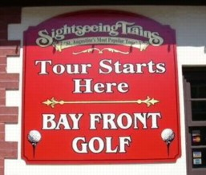
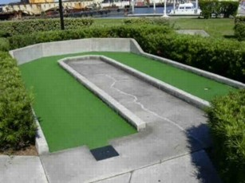

| T:
Bay Front Golf 111 Avenida Menendez, St. Augustine
(1 block south of the bridge)
(904) 829-1673, web site
 | 
| Price: $4.50 Number of Courses: 1 Upkeep: A Originality: D Hole-in-One Difficulty: Medium Par Difficulty: Easy Music: None
Bay Front Golf, Florida's oldest mini-golf course, is located within easy walking distance of the Old Town area. It is very inexpensive, but you get what you pay for. This is a bare bones course: lots of straight shots, simple bank shots, or simple ramps. The holes have flags, but they didn't have any long putters. A nice diversion from a touristy day, but not worth a special trip. |